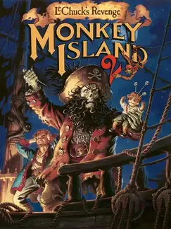

Monkey Island 2: LeChuck's Revenge
Monkey Island 2: LeChuck's Revenge
Detalles
 |
|
| Tiempo de juego | No Jugado |
| Última actividad | Nunca |
| Añadido | 10/11/2025 20:11:33 |
| Modificado | 10/12/2025 11:28:38 |
| Estado de finalización | Not Played |
| Librería | Playnite |
| Fuente | |
| Plataforma | PC (Windows) |
| Fecha de lanzamiento | 1/12/1991 |
| Puntuación de la Comunidad | 88 |
| Puntuación de la Crítica | |
| Puntuación de usuario | |
| Género | Adventure Point-and-click Puzzle |
| Desarrollador | LucasArts |
| Editor | LucasArts |
| Característica | Single Player |
| Enlaces | Community Wiki Wikipedia Twitch |
| Tag | |
Descripción
F5 = Configurar/Cargar/Guardar
Ctrl+T = Alternar textos y voces (en DOSBox)
Otras teclas:
Ctrl+A = Voz del narrador on/off
Ctrl+P = Modo Spiffy, normal, SE VGA o EGA.
Ctrl+Q = Modo sincronización de voces y textos.
Volvés a ser Guybrush Threepwood. Ahora sos un pirata "famoso" (o al menos te la creés) y tenés un objetivo nuevo: encontrar el tesoro más zarpado de todos, el "Big Whoop". Obvio, en el proceso, metés la pata hasta el fondo y lográs lo imposible: ¡revivís a LeChuck, que ahora es un ZOMBIE y está recaliente con vos!
El juego te larga en la Isla Scabb y te dice "arreglátelas". El mundo es enorme. El humor es más ácido, la historia es más rara y la atmósfera es... ufff, chabón, la atmósfera.
- Arte Nivel DIOS: Esto no es pixel art, esto es el Louvre del píxel. Es el juego de 256 colores (VGA) más lindo jamás hecho. El pantano, la Isla Booty de noche, la niebla... te morís.
- La Revolución del Sonido (iMUSE): ¡Acá LucasArts la rompió! La música es interactiva. No se corta NUNCA. Salís de un bar a la calle y la melodía hace una transición perfecta, sin cortes. Una locura tecnológica para la época.
- Más Vudú, Más Misterio: La trama se pone oscura. Seguís teniendo chistes, pero hay un tono más denso, más zarpado.
- EL FINAL: No te voy a decir nada. N-A-D-A. Solo te digo que te prepares. Es uno de los finales más polémicos, debatidos y geniales de la historia. Te va a romper el cerebro.
La joya de la corona. Si el 3 te gustó por lo lindo, este te va a volar la peluca por lo bien escrito y lo zarpado que era para su tiempo.